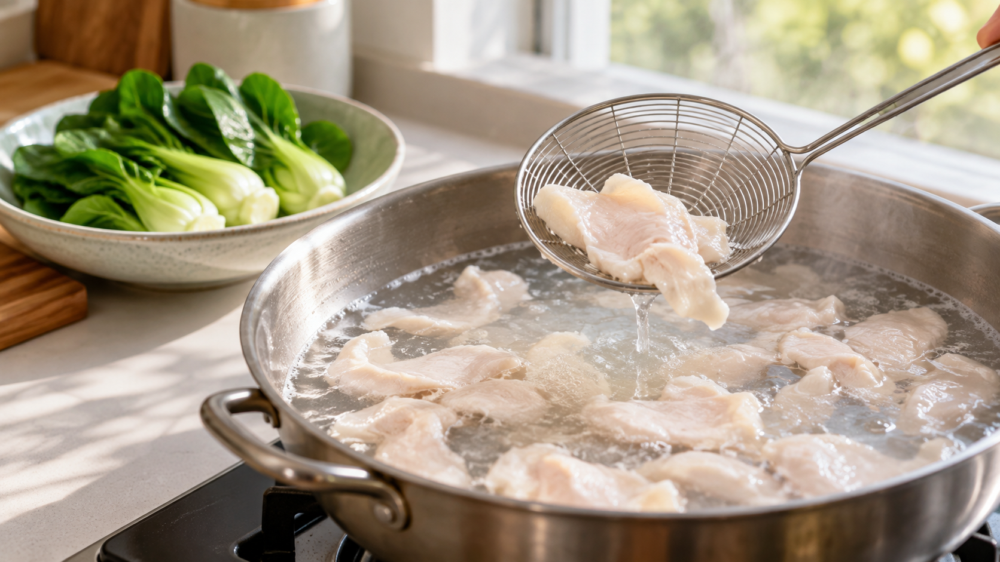

中華の「漿（チャン）」で肉がなめらかになる理由｜でんぷんと卵白の薄い膜
鶏むね肉を野菜と炒めると、肉の表面が乾いて、口当たりが硬く感じられることがあります。下ごしらえで変えられることはあるでしょうか。
肉に卵白とでんぷんの薄い下衣をまとわせ、穏やかに下加熱してから炒める方法があります。 中国料理では、こうした下ごしらえを「漿（チャン）」と呼びます。肉の内部まで必ず柔らかくなると確かめられた方法ではありませんが、表面をなめらかに仕上げたいときの選択肢です。
薄い下衣で何が起きる？
卵白は温めると固まり、でんぷんは周りの水を含んでふくらみ、とろみを帯びます。卵白とでんぷんの混合物を調べた研究でも、水分の保ち方や硬さが変わりました。ただし、これは肉の表面での試験ではありません。肉に薄く絡めて加熱すると、この二つが表面に層を作り、口に触れる部分の舌触りを変えると考えられます。
ただし、下衣が肉汁を完全に閉じ込めるわけではありません。加熱中に肉の内部のたんぱく質が変化し、水分が外へ出ることもあります。下衣を厚くすればさらに柔らかくなる、という単純な話でもありません。
研究で確認されたこと
鶏むね肉の肉だねを調べた研究では、でんぷんを加えると加熱後に残る重さが増え、でんぷん粒がふくらむ様子も確認されました。別の鶏肉の研究では、食べられる膜で肉を包んで焼くと、包まない場合より加熱時の損失が減り、柔らかいと評価されました。ただし、この膜に使われたたんぱく質は卵白ではなく、乳由来のカゼインです。
一方、魚肉だんごの研究では、卵白を増やすと柔らかくジューシーと評価されたのに対し、でんぷんを増やすと加熱中に出る汁は減っても、食感は硬くなりました。水分を保つことと、柔らかく感じることは同じではないのです。
これらは肉だね、食べられる膜、魚のすり身についての結果です。薄切りの鶏肉に卵白とでんぷんを薄く塗る家庭の漿を直接比べたものではありません。家庭では、研究の結果を「下衣の働きを考える手がかり」として使い、仕上がりを断定せずに試すのが妥当です。
鶏むね肉と青菜の炒め物
料理学校の教材にも、薄切り肉に卵白とでんぷんをまとわせ、穏やかに下加熱してから炒める手順があります。以下はその考え方を家庭向けにした2人分の提案で、配合の優劣を研究が確かめたものではありません。
材料は、鶏むね肉200g、青菜（小松菜や青梗菜）150g、卵白大さじ1、片栗粉小さじ2、水小さじ2、塩ひとつまみ、炒め油大さじ1、しょうゆ小さじ2です。食品用温度計も用意します。
- 鶏むね肉を厚さ約1cmの小片にそぎ切りします。卵白、片栗粉、水、塩を混ぜ、肉の表面へ薄く絡めます。
- たっぷりの湯を沸かしてから弱火にし、激しく沸かない状態で肉を一枚ずつ入れます。下衣の表面が白くなったらすくい上げます。この段階では中心まで火が通ったと判断しません。
- フライパンに油を熱し、切った青菜を茎、葉の順に炒めます。肉を戻して炒め合わせ、最も厚い肉の中心に温度計を差し、75℃以上を1分間以上保つまで加熱します。農林水産省の目安に沿い、表面の色や決まった炒め時間だけで判断しません。
- しょうゆを回し入れて全体に絡め、皿に盛ります。
別の料理にも生かすなら
豚肉の炒め物や白身魚の汁物でも、「表面を薄く覆ってから加熱する」という考え方は使えます。ただし、食材が変われば表面の仕上がりも変わります。衣を厚くして食感を重くするより、薄くまとわせることから始め、各食材に必要な加熱まで仕上げてください。
まとめ
漿は、卵白とでんぷんで肉の表面に薄い下衣を作る調理法です。関連研究は水分や食感が変わる可能性を示していますが、家庭の薄切り肉での効果の大きさはまだ分かりません。まずは下衣を薄くし、穏やかな湯通しの後に中心まで火を通す。その順序を覚えておくと、次の炒め物で試しやすくなります。
参考資料
- Zhang・Barbut（2005）鶏むね肉の肉だねとでんぷん、Poultry Science
- Küçüközet・Uslu（2018）鶏肉を包む食品用の膜と加熱損失、Food Science and Technology International
- 荒木千佳子・下村道子・吉松藤子（1991）「魚肉だんごのテクスチャーに及ぼす卵白及びデンプン添加の影響」
- Yeほか（2023）卵白とでんぷんの混合ゲル、International Journal of Food Science & Technology
- Culinary Institute of America Consulting「Day 3: Chinese Cuisine」
- 農林水産省近畿農政局「料理時に気を付けたいポイント」